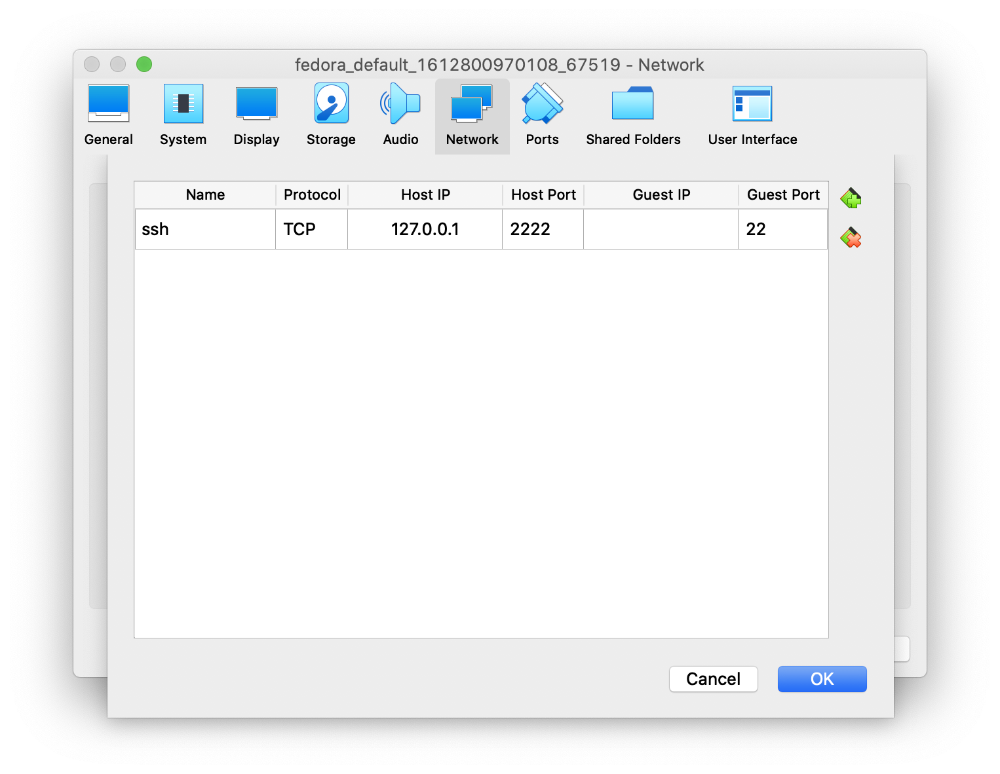

Nếu vì một lý do gì bạn không dùng vagrant (không muốn cài Ruby chẳng hạn), việc tạo máy ảo Arch trên VirtualBox không có gì phức tạp với Vagrant box.
Thay vì phải lo cài ArchLinux, tải sẵn ngay box build sẵn bởi Vagrant.
Tải ArchLinux vagrant box
Truy cập https://app.vagrantup.com/archlinux/boxes/archlinux tải file dành cho virtualbox
virtualbox Hosted by Vagrant Cloud (465 MB)
nhẹ hơn nhiều so với đĩa cài ISO Size: 826.3 MB
Giải nén với tar xvf virtualbox.box sẽ thấy ra file
box.ovf, packer-virtualbox.vmdk và một vài file ko quan trọng khác.
Import file OVF
File > Import Appliance > chọn file box.ovf > next next...
Sau đó chọn Settings > Network > Adapter 1 > NAT > Port forwarding, thêm một dòng mới, chọn host port là 1 số từ 2222 đến 22XX, Guest Port là 22.

File box.ovf này là 1 file XML, có định nghĩa cấu hình của máy sẽ được tạo, trong đó nó sử dụng file packer-virtualbox.vmdk làm ổ cứng dynamic size với kích thước tối đa là 20GB.
Bật máy ảo lên, đăng nhập với vagrant/vagrant, gõ sudo systemctl start sshd
để bật SSH server. Tắt máy đi.
SSH vào ArchLinux
Chuột phải chọn máy ảo > Start > Headless start. Chờ vài giây rồi ssh vào máy:
ssh vagrant@127.0.0.1 -p 2222
Nhập password mặc định: vagrant
$ ssh vagrant@localhost -p2222
vagrant@localhost's password:
Last login: Fri May 27 13:50:13 2022 from 10.0.2.2
[vagrant@archlinux ~]$
[vagrant@archlinux ~]$ uname -a
Linux archlinux 5.17.7-arch1-1 #1 SMP PREEMPT Thu, 12 May 2022 18:55:54 +0000 x86_64 GNU/Linux
Cài đặt phần mềm bằng pacman
pacman -Syu # upgrade
pacman -S vim git tmux
Xong.
Kết luận
Thay vì phải lo tải đĩa về cài từ đầu, dùng sẵn box của vagrant rất tiện lợi, tốn ít dung lượng. ArchLinux đi kèm với các phần mềm phiên bản mới nhất, rất thích hợp dùng làm máy ảo để khám phá.
Happy Arching.